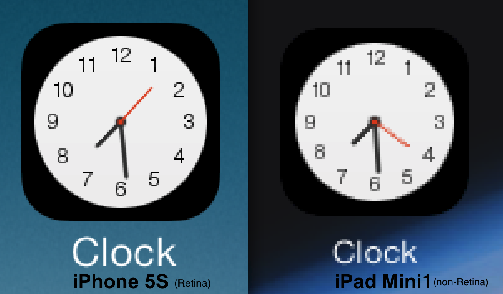

Explaining the difference between a Retina vs. a non-Retina display
-- written by Sebastian Raschka on March 24, 2014
TweetRecently, someone wanted me to explain the difference between a Retina vs. a non-Retina display. I had to explain it to her via email, and the catch was that the other person was reading/seeing it on a non-Retina Monitor.

The term "Retina display" is a marketing term used by Apple for their high-resolution displays. A display becomes "Retina", if the human eye can't distinguish between individual pixels anymore - at a typical viewing distance. To achieve such an effect, the displays require a sufficiently high pixel density, which is typically measured in PPI (pixels per inch).
However, this number also varies with the size of the device (and its "typical" viewing distance), for example, a non-Retina iPad Mini (1st gen) has 163 PPI, whereas the Retina version of the iPad Mini (2nd gen) has 326 PPI. For comparisons, the iPhone 5S also has a pixel density of also 326 PPI, but the iPad Air only has 264 PPI (although the resolution is similar to the Retina iPad Mini with 2048x1536 pixels).
| Device | Pixel density in PPI (in pixels per inch) |
Resolution (in pixels x pixels) |
|---|---|---|
| iPhone 5S Retina | 326 | 1136x640 |
| iPad Mini non-Retina (1st gen) | 163 | 1024x768 |
| iPad Mini Retina (2st gen) | 326 | 2048x1536 |
| iPad Air Retina | 264 | 2048x1536 |
To keep a long story short and provide you with an example: Below you find another set of screenshots that I took from the home screens of my iPhone 5S (Retina) and iPad Mini (non-Retina), respectively. Of course, the ideal case would have been to have, for example, two iPad Minis - one with a Retina and one without Retina diplay, but I hope that this is sufficient to get the picture ;).